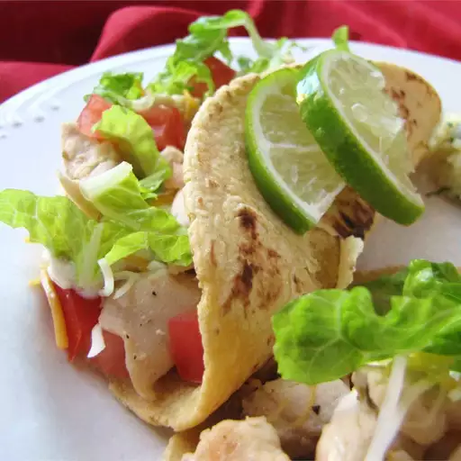

Chicken Tacos

Description
These chicken tacos seasoned with lime, oregano, and garlic are
flavorful and delicious. I was given this recipe by my mom when I
went away to college, and it has become all of my friends' favorite
dinner!
Ingredients
- 1 ½ pounds skinless, boneless chicken
- 2 green onions
- ⅛ cup red wine vinegar
- ½ lime
- 2 cloves garlic
- 1 teaspoon dried oregano
- 1 teaspoon white sugar
- ½ teaspoon salt
- ½ teaspoon ground black pepper
- 10 (6 inch) flour tortillas
- 1 tomato
- ¼ cup shredded lettuce
- ¼ cup shredded Monterey Jack cheese
- ¼ cup salsa
Steps
-
Sauté chicken in a medium saucepan over medium high heat until
tender, about 15 to 20 minutes.
-
Add green onions, vinegar, lime juice, garlic, oregano, sugar,
salt, and pepper. Simmer over low heat for 10 minutes.
-
Heat an iron skillet over medium heat. Place a tortilla in the
pan, warm, and turn over to heat the other side. Repeat with
remaining tortillas.
-
Serve lime chicken mixture in warm tortillas topped with tomato,
lettuce, cheese and salsa.